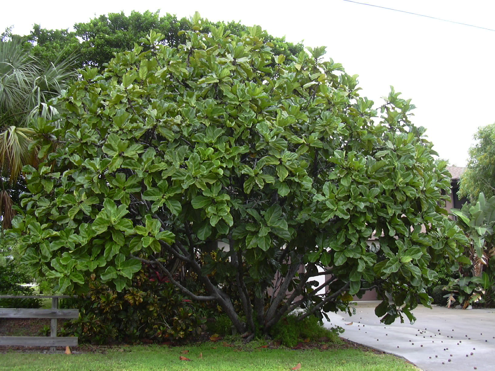

Ficus Lyrata - Description
About Ficus Lyrata
The Ficus Lyrata, also known as the fiddle-leaf fig, is a tropical tree native to West Africa. This plant is known for its large, glossy leaves that resemble the shape of a violin or fiddle.
Care Instructions
- Light: Bright, indirect sunlight
- Watering: Water when the top 1-2 inches of soil are dry
- Temperature: Prefers temperatures between 60-75°F (15-24°C)
Price: $40
If you're interested in purchasing Ficus Lyrata, please contact us or order online.
Back to Catalog